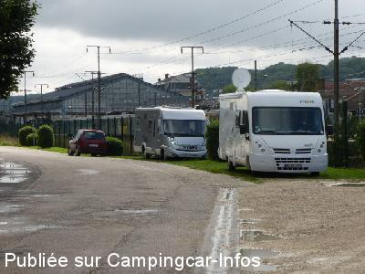
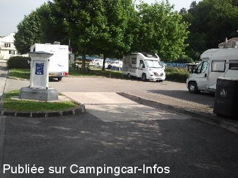
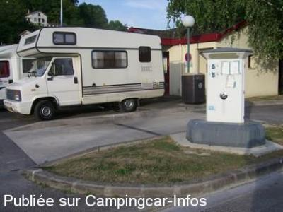
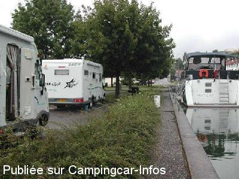
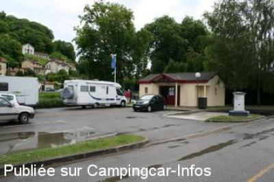

ASN = Aire de services avec stationnement nuit possible de :
BAR LE DUC
(N° 431)
Accès/adresse :
Rue du Débarcadère
55500 BAR LE DUC
55500 BAR LE DUC
Latitude : (Nord) 48.7753° Décimaux ou 48° 46′ 31′′
Longitude : (Est) 5.16637° Décimaux ou 5° 9′ 58′′
Tarif : 2015
Stationnement gratuit
Eau ou 1 h d'électricité : 2 €
Jetons à l'Office de Tourisme
Type de borne : RACLET
Services :


Proche du centre ville
Autres informations :
Ouvert toute l'année
8 emplacements matérialisés de 7 m
Tel : +33(0)329 791 113
http://www.tourisme-barleduc.fr/

Le 02/01/2014 par DIDI 31

Le 23/06/2013 par PapyJP

Le 23/07/2011 par voyageur 65

Le 08/08/2007 par Quai (h.MAIN)

Le 30/06/2007 par Pégase
de
lefebvre
le 31/08/2015 :
passer sur l'air de Bar le Duc début aout très belle air prés de l'eau mais aussi très prêt de la gare bien pour visiter la ville qui est très belle mais coté tranquillité moyen
passer sur l'air de Bar le Duc début aout très belle air prés de l'eau mais aussi très prêt de la gare bien pour visiter la ville qui est très belle mais coté tranquillité moyen
de
GT
le 23/03/2014 :
AVEC UN CC DE 7m40 et le porte vélo, je n ai pas voulu m y mettre ,sinon impossible pour les autres d en sortir.
AVEC UN CC DE 7m40 et le porte vélo, je n ai pas voulu m y mettre ,sinon impossible pour les autres d en sortir.
de
Guy28
le 18/10/2013 :
Couplé à la halte fluviale. Ligne de chemin de fer très fréquentée la nuit.Accès délicat pour les CC de + de 6m. Aire bien située pour visiter la ville
Couplé à la halte fluviale. Ligne de chemin de fer très fréquentée la nuit.Accès délicat pour les CC de + de 6m. Aire bien située pour visiter la ville
de
LeVoyageur38
le 29/05/2011 :
Aire il est vrai un peu bruyante la nuit à cause des trains, par contre très pratique pour les services, et la visite de la ville, 10 minutes à pied pour la ville basse.
Aire il est vrai un peu bruyante la nuit à cause des trains, par contre très pratique pour les services, et la visite de la ville, 10 minutes à pied pour la ville basse.
de
Biene
le 19/04/2009 :
De passage le 9 avril pour visiter la ville, nous nous sommes adressés à l'OT qui nous a indiqué plusieurs emplacements calmes pour la nuit, près du Conseil Général (grand parking) et une petite place "sous leur fenêtre"..... Cette région semble vouloir attirer les CCars.
De passage le 9 avril pour visiter la ville, nous nous sommes adressés à l'OT qui nous a indiqué plusieurs emplacements calmes pour la nuit, près du Conseil Général (grand parking) et une petite place "sous leur fenêtre"..... Cette région semble vouloir attirer les CCars.
de
Elke & Henri les belges
le 28/03/2008 :
voulions passer la nuit du 17 au 18/03/08, nous nous sommes enfuis,d'un côté et à c^té du canal route très bruyante et de l'autre côté voies de chemin de fer et gare,des trains de passage et qui ne s'arraitent pas annonçaient leur passage avec leurs "claxons"
pas d'indiquation d'où se trouve l'office de tourisme pour des jetons et dans toute la ville aucune indication pour pouvoir se garer
dommage nous voulions visiter cette ville
voulions passer la nuit du 17 au 18/03/08, nous nous sommes enfuis,d'un côté et à c^té du canal route très bruyante et de l'autre côté voies de chemin de fer et gare,des trains de passage et qui ne s'arraitent pas annonçaient leur passage avec leurs "claxons"
pas d'indiquation d'où se trouve l'office de tourisme pour des jetons et dans toute la ville aucune indication pour pouvoir se garer
dommage nous voulions visiter cette ville
de
henri MAIN
le 08/08/2007 :
Bar le Duc est maintenant bien connue des camping-caristes depuis son Colloque d'avril 2007 où l'on se promettait de trouver les réponses à la question :
Comment réussir l'accueil des camping-cars ?
Cliquez ici pour accéder au compte-rendu
Cette charmante ville au style renaissance, d'art et d'histoire, vous accueille également sur son site internet: Cliquez ici
Avant de vous y promener faites connaissance avec tout le pittoresque de cette ville En cliquant ici .
N'oubliez surtout pas avant de repartir, de vous intéresser à la confiture de groseille, épépinées à la plume d'oie ; Cliquez ici .
Les trois premières photos sont celles de l'ancien emplacement de l'aire qui se trouve maintenant située au port de plaisance, le cadre y gagne énormément en agrément (gazon pique-nique ) peut-être pas en calme
Beaucoup plus fonctionnels, les services auraient cependant pu y être meilleurs encore si ; le nombre de places avait été plus ambitieux (limité à 4), l'utilisation des bornes électriques était autorisée aux camping-cars, l'accès au bloc sanitaire et douches n'était pas réservé exclusivement au plaisanciers ! En prenant connaissance de ces restrictions, le camping-cariste à l'impression d'être toléré.
Le Comité départemental du tourisme ( à l'initiative du Colloque), consulté sur cette situation, m'informe que la mise en œuvre du site, relève de l'Office du Tourisme (5 rue Jeanne d'Arc, à 100m, aux pieds de l'église) et que prochainement une information sur de nombreux points de stationnements officiellement autorisés aux camping-cars sera publiée, cette mesure visant à disperser nos véhicules dans la ville afin d'éviter l'impacte nuisible des gros rassemblement
Bar le Duc est maintenant bien connue des camping-caristes depuis son Colloque d'avril 2007 où l'on se promettait de trouver les réponses à la question :
Comment réussir l'accueil des camping-cars ?
Cliquez ici pour accéder au compte-rendu
Cette charmante ville au style renaissance, d'art et d'histoire, vous accueille également sur son site internet: Cliquez ici
Avant de vous y promener faites connaissance avec tout le pittoresque de cette ville En cliquant ici .
N'oubliez surtout pas avant de repartir, de vous intéresser à la confiture de groseille, épépinées à la plume d'oie ; Cliquez ici .
Les trois premières photos sont celles de l'ancien emplacement de l'aire qui se trouve maintenant située au port de plaisance, le cadre y gagne énormément en agrément (gazon pique-nique ) peut-être pas en calme
Beaucoup plus fonctionnels, les services auraient cependant pu y être meilleurs encore si ; le nombre de places avait été plus ambitieux (limité à 4), l'utilisation des bornes électriques était autorisée aux camping-cars, l'accès au bloc sanitaire et douches n'était pas réservé exclusivement au plaisanciers ! En prenant connaissance de ces restrictions, le camping-cariste à l'impression d'être toléré.
Le Comité départemental du tourisme ( à l'initiative du Colloque), consulté sur cette situation, m'informe que la mise en œuvre du site, relève de l'Office du Tourisme (5 rue Jeanne d'Arc, à 100m, aux pieds de l'église) et que prochainement une information sur de nombreux points de stationnements officiellement autorisés aux camping-cars sera publiée, cette mesure visant à disperser nos véhicules dans la ville afin d'éviter l'impacte nuisible des gros rassemblement
de
papyalain
le 30/07/2007 :
je la deconseille aux grands camping cars , un peu exigue , de plus à proximité d'une ligne de chemin de fer tres frequentée la nuit , sinon bel environnement et sentiment de securité dans une ville bien calme
je la deconseille aux grands camping cars , un peu exigue , de plus à proximité d'une ligne de chemin de fer tres frequentée la nuit , sinon bel environnement et sentiment de securité dans une ville bien calme
de
ECOUTE
le 01/05/2007 :
aire bien sympa
possibilité de dormir sur place joli coin tranquille mais à 100m d'un mac do alors tous les jeunes viennent manger ici jusque minuit le week end mais sans dégradation
le gardien de la halte est sympa propose des jetons gratuitement
avons pu bénéficier de l'électricité gratuite une nuit grace au branchement des bateaux
aire bien sympa
possibilité de dormir sur place joli coin tranquille mais à 100m d'un mac do alors tous les jeunes viennent manger ici jusque minuit le week end mais sans dégradation
le gardien de la halte est sympa propose des jetons gratuitement
avons pu bénéficier de l'électricité gratuite une nuit grace au branchement des bateaux
de
Pégase
le 22/04/2007 :
L'aire de services de Bar-le-Duc a été récemment déplacée vers la halte du port fluvial située rue du débarcadère, le long du canal de la Marne au Rhin. C'est bien indiqué, la borne est toujours la même et les jetons sont toujours à retirer aux mêmes endroits. Les nouvelles coordonnées (à vérifier sur place) sont:
Lat. 48.46.35 N (48.7765) et Long. 5.09.55 E (5.1652)
Dès que possible, je vérifierai les coordonnées et prendrai qq photos.
L'aire de services de Bar-le-Duc a été récemment déplacée vers la halte du port fluvial située rue du débarcadère, le long du canal de la Marne au Rhin. C'est bien indiqué, la borne est toujours la même et les jetons sont toujours à retirer aux mêmes endroits. Les nouvelles coordonnées (à vérifier sur place) sont:
Lat. 48.46.35 N (48.7765) et Long. 5.09.55 E (5.1652)
Dès que possible, je vérifierai les coordonnées et prendrai qq photos.
de
Lex
le 26/01/2007 :
Aan de linkerzijde VOOR dit Servicepunt is een groot verhard parkeerterrein. Denk aan de drempel bij het oprijden !!!
Op opgegeven plek kunnen max. twee campers staan. Toen wij er waren (Jan) was het i.v.m. de drassigheid onmogelijk om daar veilig en zonder dat je er uit gesleept dient te worden,te staan
Aan de linkerzijde VOOR dit Servicepunt is een groot verhard parkeerterrein. Denk aan de drempel bij het oprijden !!!
Op opgegeven plek kunnen max. twee campers staan. Toen wij er waren (Jan) was het i.v.m. de drassigheid onmogelijk om daar veilig en zonder dat je er uit gesleept dient te worden,te staan
de
***
le 17/05/2006 :
Une petite aire dans une ville très agréable, près du stade de foot. Boutiques (boulangeries...) à quelques pas.
Une petite aire dans une ville très agréable, près du stade de foot. Boutiques (boulangeries...) à quelques pas.
de
JP FAGE
le 13/05/2002 :
Aire ouverte et inaugurée le 04 mai 2002. Jetons se renseigner au camping du château à 100m de la borne.
Aire ouverte et inaugurée le 04 mai 2002. Jetons se renseigner au camping du château à 100m de la borne.